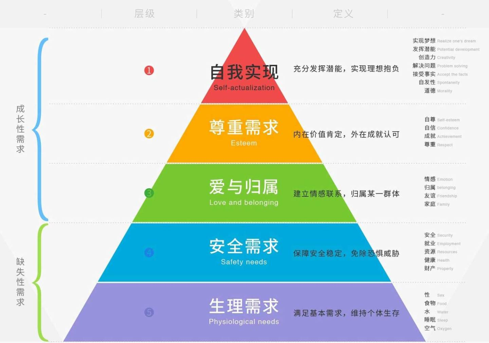

马斯洛关于人性研究的核心观点
- 人类有趋向于健康、创造性和自我满足等更高层次的内在趋势。
- 神经症可以被认为是对自我实现趋向的一种阻断。
- 一个有协同作用的社会的演进是一个自然和基本的过程。它是这样一种社会:在其中，所有的个体都可以达到自我发展的高级层次，但又不会妨碍他人的自由。
- 商业效率和个人成长并不是不相容的。自我实现的过程使每一个个体都趋向于最高的效率水平。
关于动机的17个命题
- 作为一个整体的个人
个人是一个一体化的、有组织的整体。当我们饿的时候，不是肚子需要食物，而是作为整体的人需要。食物平息的也不是肚子的饥饿感，而是我们个体的饥饿感。 - 作为动机状态典型的饥饿
饥饿驱力是特殊的而不是一般的动机实例。在透彻研究饥饿冲动与全面了解爱的需要相比，我们能够通过后者更多地了解普遍的人类动机。饥饿驱力即食物需要，它比其它动机更孤立、更常见，同时还有一个躯体基础（如肚子产生饥饿的反应. 。因此其不适合作为研究动机的实例。 - 手段和目的
生活中的普通欲望，通常是达到目的的手段而非目的本身。我们需要钱（手段. ，并不是因为钱具有价值，而是因为它能够实现我们的很多心愿（目的. ——如给亲人和自己买礼物、去喜欢的地方旅游等。
瓜瓜问：游戏是目的还是手段？（PS.书中第六章有提. - 无意识动机
一个有意识的欲望与它下面潜藏的最终的无意识目标之间的关系完全不必是直接的。瓜瓜疑惑：无意识目标是啥？是说达成目标已经成为习惯？不需要刻意坚持吗？查了很多网络资料，还是没很懂，请大佬们指教哇。 - 欲望与文化
两种不同的文化可能提供两种不同的方法来满足某一特定的欲望。在原始社会，要满足自尊需要，可能需要通过武力斗争；而在现代，通过脑力劳动来满足自尊需要是很常见的。 - 复杂多样的动机
一般来说，一个行动或有意识的愿望具有多种不同的动机。第3点的手段和目的也很好地论证了这一点，我们赚钱并不仅仅是因为喜欢钱，更重要的是因为钱背后所代表的东西。 - 促动状态
动机是连续不断的、无休止的、起伏的和复杂的。 - 满足产生新的动机
一个欲望满足后，另一个迅速出现并取代它的位置,当这个被满足了，又会有一个站到突出的位置上来。产生新动机的原因之一：当我们对某个事物具有强烈欲望时，我们就会努力；努力与坚持过后，我们将会得到，但往往在即将得到之前，我们对它的欲望却远远没有之前那么强烈，因为努力的过程改变了我们，努力让我们变得更好，而此时更好的自己已经无法和之前的欲望相匹配。换言之，当我们欲望得到满足时，我们对它的在意程度大大降低，因为欲望的满足过程改变了我们的看待事物的方式和角度、充实了我们自己，这也让我们更加有信心，还可能由此产生更高层次的欲望。 - 不可能列出内驱力一览表
内驱力之间不仅没有相互的排斥，它们的相互重叠甚至使我们几乎不可能完全清楚和严格地把一种内驱力同其他内驱力分开。 - 按照基本目标为动机分类
内省地出现在意识中的内驱力、动机行为，甚至被明确追求的目的物，它们没有一个可作为人类动机生活的动力分类的坚实基础。
一个正在经历性欲、求爱、完成性行为全部过程的人，也许实际上是在寻求尊重，而不是性的满足。 - 动物资料不足以说明问题
动机理论必须以人为中心，而不是以动物为中心。 - 环境
动机理论不仅包括机体本身，而且应包括环境，包括文化的决定作用。 - 整合作用
正如我们有时同时做好几件事情，机体甚至也可能以非一元化的方式做出反应。
当生活轻松顺利时，机体可以同时做许多事情，向许多方向发展。 - 无动机的行为
并非所有行为或者反应都是有动机的。成熟、表现、成长以及自我实现等现象都违背了普遍的动机理论的法则，这些现象是表达性的而不是应对性的。有时，我们的行为并非是为了达到特定的目标，而只是一种漫无目的的情感表达。如本书第2章提到的：“一个健康孩子做出的漫不经心的动作，愉快的人独自一人时脸上露出的笑容…这些都是属于表达性的、非机能性的行为。一个人言行举止的风格，也几乎总是表达性的。” - 达到目的的可能性
我们有意识地渴望一切实际可能获得的东西。正如现在的瓜瓜不会想去拥有一架私人飞机，但会想努力赚钱买一套房。 - 现实和无意识
弗洛伊德认为，一个本我冲动(id impulse)是一种分离的存在，与世界上任何其他事物都没有内在的联系。
杜威认为，成年人的所有冲动，是与现实结合，并且受现实影响的。 - 健康人的动机
任何值得关注的动机理论，除讨论有缺陷者的防御手段外，还必须讨论健康、强健的人的最高能力。在严谨的理论中，不能仅由特殊来推一般。科学研究所选的个体应该全面且具有代表性。
基本需要的层次
- 生理需要
- 安全需要
- 归属与爱的需要
- 自尊需要
- 自我实现的需要

类本能理论中的基本需要
从某种意义上说，基本需要在某种可以察觉到的程度上是由体质或遗传决定的。理由如下：
- 独特的人类本能
有些本能性的冲动只能在人类身上被发现。 - 挫折是致病的
基本需要必须得到满足，否则我们就要得病。 - 得到满足是一种健康
基本需要的满足会产生有益的、良好的、健康的、自我实现的效应。 - 必要性
基本需要满足物的必需性使它们自身与其他需要的满足物区别开。 - 心理治疗
所有主要的心理治疗方式都培育、促进、巩固了我们称为基本的、类本能的需要，同时削弱或彻底消除所谓神经症的需要。 - 鼓励本能
教育、法律、宗教等至少应起保护、促进、鼓励安全、爱、自尊、自我实现等类本能需要的表达和满足。 - 两分矛盾的解决
基本需要的类本能性质有助于解决生物性与文化、天生与习得、主观与客观、独特性与普遍性之间的矛盾。
应对性行为和表达性行为的区别
- 应对是有目的、有动机的，而表达没有；
- 应对需要作出努力，而表达不需要；
- 应对更多地是由外界环境决定，而表达主要取决于机体本身的状态；
- 应对通常是后天学习的结果，而表达不是；
- 应对更容易被控制，而表达往往是不受控制甚至不可控制的；
- 应对通常是想改变环境，而表达对环境的改变是无意的；
- 应对是手段，而表达是目的；
- 行为中的应对成分是有意识的，而表达更可能是无意识的。
表达性行为
- 存在
当人们是自在的自己时，往往会出现表达性行为。 - 艺术
当艺术是在寻求交流、力图激起感情、表现和影响他人时，艺术创造就是相对有动机的，艺术还可以是相对无动机的，这时，它是表达性的而不是交流性的，是个人内部的而不是人与人之间的。 - 欣赏
神秘、敬畏、愉快、惊异、赞赏等体验也都属于这一类被动的丰富的主观审美体验，这些体验涌向机体，像音乐的效果一样，使机体沉浸其中。 - 游戏
游戏可以是应对性的，也可以是表达性的，或两者兼有之。 - 智力表现
思维，如同感知一样，可以是自发的和被动地接受或生产，它们是机体的本性和存在的无动机、不费力、快乐的表现，是让事情自然发生而不是人为地致使它们发生
对自我实现者的总体印象
- 对现实的感知：更倾向于领悟真实的存在，而不是拘泥于他们自己或他们所属文化群的愿望、希望、恐惧、焦虑以及理论或信仰中。
- 接受性：能够以一个人在接受大自然的特性时所持的那种毫不怀疑的态度，来接受脆弱、过失、弱点，以及人性的罪恶方面。
- 自发性：有相对自主的、独特的、不遵从惯例的道德准则。
- 以问题为中心：他们不以自我为中心。也因此，他们有能力把注意力集中到常人不易达到的程度。
- 超然独处：可以超然于物外，泰然自若地保持平静，而不受那些在其他人那里会引起骚动的事情影响。
- 自主性：自我实现者的发展和持续成长依赖于自己的潜力以及潜在的资源。
- 清新的鉴赏力：具有奇妙的反复欣赏的能力，他们带着敬畏、兴奋、好奇甚至狂喜、清新而又天真无邪地体验生命的基本内涵。
- 高峰体验：以问题为中心、高度集中，献身行为，强烈的感官体验，对音乐或艺术的忘我、投入的欣赏，等等。
- 人类亲情：对人类怀有一种很深的认同、同情和爱的感情。
- 谦逊与尊重：对每个人都会给予一定程度的尊重。
- 人际关系：比其他成年人具有更深刻和深厚的人际关系。
- 道德：自我实现者的道德力量很强，有明确的道德标准。
- 手段与目的：他们更关注目的，手段相当明确地从属于目的。
- 幽默感：他们的幽默感常常与哲理紧密相关联。
- 创造性：相对于那些更狭隘的人，他们更具有创造力。
- 对文化适应性的抵抗：他们全都在某种深刻的、意味深长的意义上抵制文化适应。
- 不完美性：他们也有罪恶感、焦虑、沮丧、自责、内心的矛盾和冲突。
- 价值：他们以哲人的态度接受自我、接受人性、接受大部分社会生活、接受自然和客观现实，这为他们的价值系统提供了坚实基础。
瓜瓜总结：自我实现者拥有比常人更敏锐的洞察力、鉴赏力、创造力，他们对坏事物、未知事物社会生活、客观现实等有着更开放的态度。在社会层面，他们会尊重每位社会成员，对人类具有很深的感情，有着深厚的人际关系；但他们并非总是规则的接受者，他们有着非同寻常的道德标准。除此之外，他们还有哲理性幽默、以问题为中心、关注目的等特点。
自我实现者的创造性
- 感知：他们可以看到新鲜的、天然的、具体的和形象化的事物，也可以看到属类的、抽象的、仪式性的、分门别类了的事物。
- 表达：他们更具自发性，更富有表达能力。
- 儿童的纯真：他们的创造性在许多方面类似于天然快乐、无忧忧虑的儿童的创造性。
- 对未知事物的好奇：他们更不惧怕未知、神秘、令人迷惑的事物，反而经常沉浸其中。
总之，自我实现者的创造性首先强调的是人格，而不是成就，因为这些成就是人格的附产物，是从属于人格的。